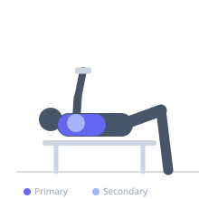

Exercise guide / Dumbbell Around-The-Worlds
Dumbbell Around-The-Worlds
Dumbbell around-the-worlds move two dumbbells in a wide circular arc from the thighs, out to the sides at shoulder level, and over the chest to meet above the sternum. This continuous circular movement engages the pectorals across multiple angles and enhances shoulder mobility while delivering a unique stretch-to-contraction stimulus.
Primary muscles
pectoralis major sternal
pectoralis major clavicular
Secondary muscles
deltoid anterior
deltoid lateral
Stabilizers
pectoralis minor
Equipment
Dumbbell (Fixed)
Flat Bench
Optional
Adjustable Bench (Incline / Decline)


Starting position
- Lie on a flat bench holding a light dumbbell in each hand, arms at the sides of the body near the hips, palms facing up.
Setup
- Use a very light dumbbell — far lighter than you would for a dumbbell fly. Lie flat with arms alongside the body.
Steps
- Step 1: Begin with the dumbbells at the sides of your hips, palms facing upward.
- Step 2: Sweep both arms out to the sides in a wide arc, keeping them close to the bench surface.
- Step 3: Continue the arc upward and inward until the dumbbells meet above the chest, palms now facing each other.
- Step 4: Reverse the motion, parting the hands and sweeping them back down in the same arc to the hips.
- Step 5: Perform the full circle smoothly and slowly, feeling the chest engage throughout.
Coaching cues
- Draw big circles on the ceiling with the dumbbells
- Light weight, feel everything
- Squeeze the chest as hands meet
Breathing
- Breathe naturally throughout. Exhale as the hands come together above the chest.
Range of motion
- The circle should be as wide as comfortably possible at the bottom and converge tightly at the top. Feel a stretch at the sides and a contraction at the top.
Tempo
- 3-0-3-0
Common mistakes
- Using dumbbells that are too heavy, compromising the arc
- Rushing through the movement instead of feeling each position
- Bending the elbows significantly
Safety
- Keep weights very light — this is a mobility and isolation exercise, not a loading exercise
- Avoid this exercise if you have shoulder impingement
- Perform slowly and with full control
Training
- hypertrophy: 12–20 reps
- endurance: 20–30 reps
- hypertrophy: 2–3 sets
- Rest: {'hypertrophy': 60, 'endurance': 30}